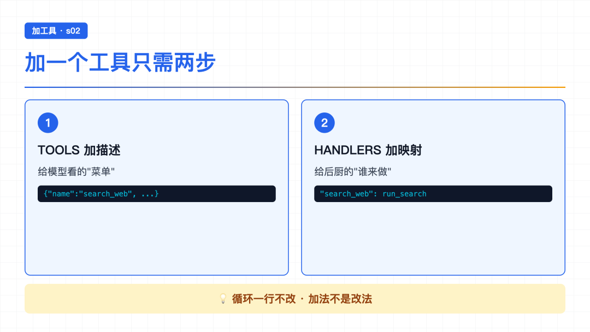
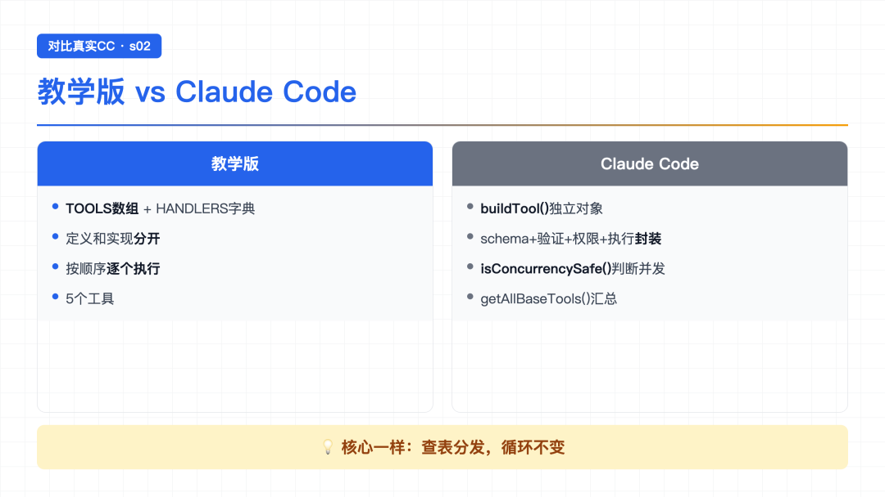

大家好，我是郑同学。
上一节主要拆了 Agent Loop——AI 编程智能体的核心就是一个 while 循环，靠 stop_reason 一个字段控制继续还是退出。最后留了个问题：s01 的 Agent 只有一个 bash 工具，读文件要 cat，写文件要 echo >，每步都在翻译。加工具要不要改循环？多个工具同时调用会不会冲突？
这一节看看 Tool Use——给 AI 配一套专业工具。
● ● ●
s01 的 Agent 手里只有一把瑞士军刀——bash。模型心里想的是"读这个文件"，嘴上却要说 cat path/to/file。
想读文件 → cat
想写文件 → echo >
想改文件 → sed
这层翻译有三个麻烦：浪费 token（命令字符串占空间）、容易拼错路径、更关键的是——模型想做的事和工具能力之间隔着一层 bash 方言，这层翻译本身就是 bug 来源。
就好比你雇了个懂 Python 的实习生，结果只能让他用记事本干活。他心里想的是"打开那个文件"，嘴上却得说"cat README.md"。
● ● ●
直接给答案：循环一行都不用改。
唯一的变化在工具执行那行代码：
# s01：写死调 bash output = run_bash(block.input["command"]) # s02：查表分发 output = TOOL_HANDLERS[block.name](**block.input)
s01 是写死的——不管模型说什么，都走 run_bash。s02 是查表的——模型说调 read_file 就走 read_file，说调 write_file 就走 write_file。
while True、stop_reason 判断、消息追加——全部不变。只换了工具执行那 1 行。
● ● ●
核心机制是一个叫 TOOL_HANDLERS 的字典：
TOOL_HANDLERS = { "bash": run_bash, # key = 工具名 → value = 处理函数 "read_file": run_read, "write_file": run_write, "edit_file": run_edit, "glob": run_glob, }
模型说"我要调 read_file"，代码就去字典里查这个名字对应的函数，然后调用它。就像查黄页：你说要"修水管"，代码翻开目录找"水管工"，拨电话。
s01 的黄页只有一页（bash），s02 有 5 页，想调谁调谁。
● ● ●

card-03
以后想再加一个工具，比如 search_web：
第一步——在 TOOLS 数组加一条描述（给模型看的"菜单"）：
TOOLS = [ # ... 已有工具 ... { "name": "search_web", "description": "Search the web", "input_schema": {"type": "object", "properties": {"query": {"type": "string"}}} } ]
第二步——在 TOOL_HANDLERS 加一行映射（给后厨看的"谁来做"）：
TOOL_HANDLERS = { # ... 已有映射 ... "search_web": run_search_web, # 加这一行 }
两步加完，循环不动。这就是"加一个工具只加一行"的意思。
● ● ●
s01 的模型什么都要翻译成 bash 方言；s02 让模型直接用专用工具——它想做什么，就有什么。
输入：
Read the file test.txt
第一步：代码把这句话发给大模型。模型看到——用户要读文件，s02 有专门的 read_file 工具，不用 bash 的 cat 了。
第二步：大模型返回回答，选择调用 read_file 工具：
> read_file test content
第三步：代码查 TOOL_HANDLERS 表，找到 read_file 对应的函数，执行，返回文件内容。
第四步：结果喂回大模型，大模型回答：
文件内容是 "test content"
模型想"读文件"就直接调"读文件"工具。没有 cat 命令的拼装，干净利落。
输入：
Write "hello world" to greeting.txt
大模型一看——有专用工具 write_file，直接点菜：
> write_file Wrote 11 bytes Done!
s01 要做这事，得让模型拼 echo "hello world" > greeting.txt——引号、重定向符号一个都不能错。s02 直接 write_file(path, content)，模型心里怎么想，参数就怎么传。
这个让我有点意外。我只说了一句话：
Create calc.py with multiply function, then read it back
这句话藏着两个任务——"写文件"和"读回来验证"。大模型一个回答里连续调了两个工具：
> write_file （先写文件） 78 bytes > read_file （再读回来确认） def multiply(a, b): return a * b
一轮，两个工具，自己组合。
循环怎么处理的？遍历 response.content 里的所有 tool_use 块，逐个查表执行，结果全部喂回。循环不关心调了几个工具、是什么类型——它只管遍历、执行、喂回。
● ● ●

card-04
教学版和真实 CC 的工具系统对比：
教学版 Claude Code ────────── ────────────── TOOLS 数组 + HANDLERS 字典 buildTool() 创建独立对象 定义和实现分开 schema + 验证 + 权限 + 执行封装 按顺序逐个执行 isConcurrencySafe() 判断并发 5 个工具 getAllBaseTools() 汇总所有工具
几个有意思的差距：
工具定义方式不同。 教学版是 TOOLS 数组（描述）+ TOOL_HANDLERS 字典（实现），两者分开。CC 每个工具是 buildTool() 创建的独立对象，把 schema、验证、权限、执行全封装在一起。
并发安全判断。 教学版按原始顺序逐个执行，不做并发。CC 用 isConcurrencySafe(input) 判断——注意这不是简单的"只读 vs 写"，而是按具体输入判断。比如 FileRead 大部分情况是只读安全的可以并发，但如果读取的是特殊文件也可能不安全。
==教学版的分离方式对教学更清晰——一眼看到"加一个工具 = 两条定义"。CC 的封装方式对生产更健壮。==
● ● ●
run_bash() 换成 TOOL_HANDLERS[block.name]() 查表分发——只改了 1 行TOOLS 加描述 + TOOL_HANDLERS 加映射，循环不动buildTool() 封装 + isConcurrencySafe() 并发判断● ● ●
现在 Agent 有 5 个工具了，能力上去了——但有个隐患。read_file、write_file 受 safe_path 保护，逃不出工作目录。但 bash 不受限制——==rm -rf / 还是能跑。==
一个不受限制的实习生，能力越强，闯的祸越大。
那怎么解决？给它加一道安全门——在工具执行前做权限判断。但问题是：加在哪里？直接写进循环里？那每加一个检查规则都要改循环，越来越乱。
下一节围绕"权限系统"展开，看看三道闸门怎么挡住危险操作。
源码地址：https://github.com/shareAI-lab/learn-claude-code